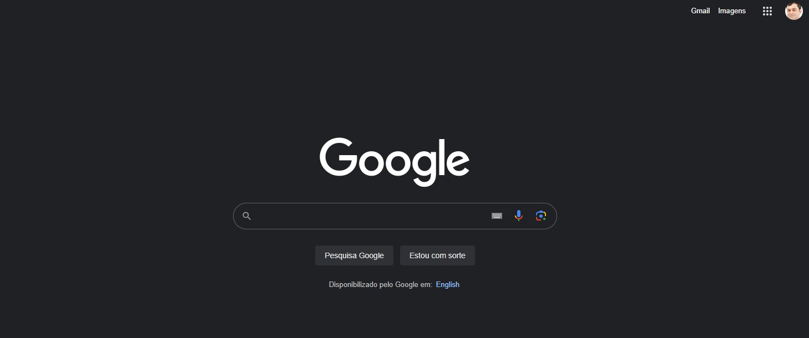

Hick's Law
Hick's Law states that the time it takes to make a decision increases with the number and complexity of choices. Websites that streamline choices, like simple navigation menus or minimalistic product selections, demonstrate good application of Hick’s Law.
Google home page is a prime example with its minimalistic design featuring just the search bar, making the decision-making process quick and straightforward.
PARC: Alignment
Alignment creates a sharper, more ordered appearance by ensuring that every item aligns with others along common edges or centers. Websites that exhibit clean, aligned content, such as text aligning neatly in columns or along the same horizontal or vertical lines, are using this principle effectively.
LinkedIn features a consistent alignment of text, images, and sections across the platform, creating a clean, professional look.
Visual Hierarchy
Contrast involves arranging opposing elements (black vs. white, large vs. small) to highlight their differences. This creates visual interest and pulls the viewers attention to key areas. Effective uses of contrast can be seen in websites that use bold colors against a subdued background, or different text sizes for headings and subheadings to draw attention.
The Verge utilizes high contrast in its design with bold colors against a dark or light background to draw attention to news headlines and key features